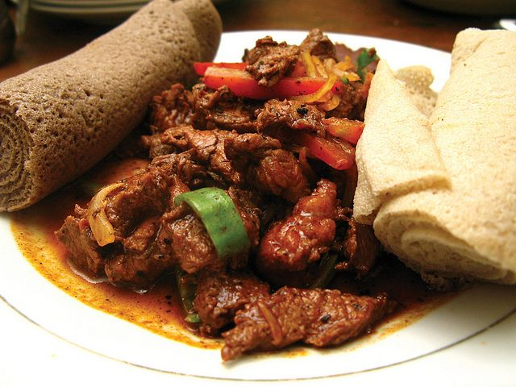

Tibs

Beef Tibs - Ethiopian Stir Fry
One of the most popular Ethiopian stir fry dishes, called Tibs.
This spicy stir fry is easy to prepare. Traditionally made with beef, served over injera (flat bread).
Ingredients
- 1 pound cubed flat-iron steak
- ¼ cup red onion, sliced
- 1 tomato, cut in wedges
- 3 tablespoons olive oil (or preferred alternative)
- 1 teaspoon salt
- 1 tablespoon berbere (ground red jalapeno)
- 2 teaspoon garlic, minced
Steps
- Add the tomatoes and onions to a pan and cook on medium heat for 3 to 4 minutes, until soft.
- Then add 2 tablespoons of oil and the berbere. Turn the heat to low and simmer for about 5 minutes.
- Next, add the garlic and simmer for 2 more minutes.
- The last step for the sauce is to add ½ teaspoon of salt.
- In a separate pan, heat 1 tablespoon of oil on medium-high heat, then add the meat.
- Sprinkle ½ teaspoon of salt and cook for 2 to 3 minutes, stirring occasionally.
- Move the meat to the pan with the berbere sauce. Cook until done, about 8-10 minutes.
Back